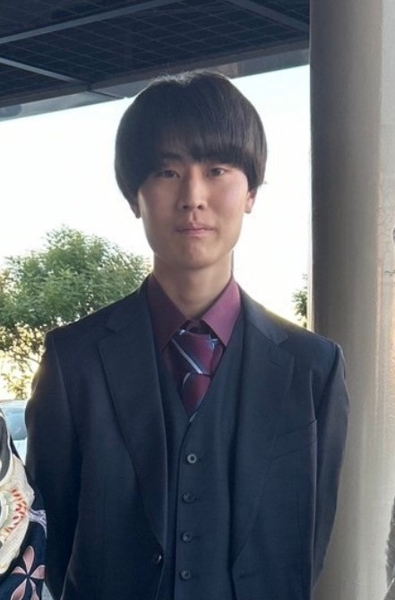

Yumeto Kozuma | WDD 130
Hello! My name is Yumeto Kozuma and I am from Japan. I love playing video game and listening to music. I am looking forward to learning new knowledge through this class.
Hello! My name is Yumeto Kozuma and I am from Japan. I love playing video game and listening to music. I am looking forward to learning new knowledge through this class.